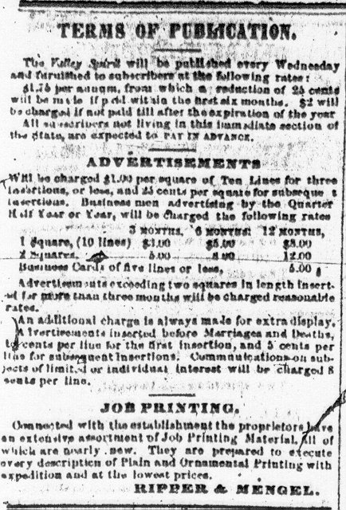

Column 1: Below the masthead, a poem generally appeared. Sometimes this selection of verse was commissioned for or submitted to the Valley Spirit in particular. Often, however, the poetry was acquired from another paper via the newspaper "exchange."  The February 1 poem, for example, was "written for the Morning Pennsylvanian."
Columns 2-6: Most of page 1 was filled with items of national or international news. Almost always, these items were taken from other papers in the Valley Spirit's circuit of exchange. Frequently, these items were not related to politics, but rather described unusual events and human interest stories, not unlike columns 4-7 of page 1 of the Spectator. This did not mean, however, that the editors of the Spectator and the Valley Spirit found the same pieces of news of interest or value. On February 1, 1860, for example, the Valley Spirit did not carry a single item of news on page 1 that the Spectator had carried just a day earlier. The Spectator and the Valley Spirit received their extralocal news from different newspapers, and they had different priorities in determining what might be of interest to their readers. The Valley Spirit was Democratic while the Spectator was Whig, and thus each received other newspapers of its particular political bent. Moreover, geography played a role in the selection of news.
On February 1, for example, the Valley Spirit carried two items dealing particularly with Pennsylvania, while a third item originated in the Easton (Pa.) Argus. A Virginia newspaper of any political strain would be unlikely to publish these articles, choosing instead to spread its state's news. One result of nineteenth century news selection, then, is that in looking at sections of two different newspapers of the same week that ostensibly were devoted to the same type of news coverage (international news, for example), without actually viewing the publication date one might be hard-pressed to ascertain if the papers were published around the same time.
The bottom of page 1 was often occupied by aphorisms and jokes, not unlike those that often appeared toward the bottom of page 1 of the Staunton Spectator.
As with the short items appearing in the Spectator, these were seemingly selected to fill space and present a page with as little spillover as possible from column to column.
Proceed to page 2